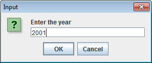
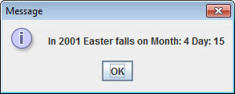

int Division and Mod Programs
Each of the following programs uses one of the two special math operations:
int division:
When two ints are divided, the result must be an int.
This means that any decimal value is completely dropped. This may be used
to tell you how many whole times a number goes into another.
ex. 13/3 is a 4, meaning that 3 goes into 13 four times. The remainder is discarded.
mod:
The '%' sign represents modulus, which will only tell you the remainder of the division of two numbers.
ex. 13%3 is a 1, meaning that 3 goes evenly into 12, but there is 1 left over.
Assignments:
1) Write a program named LongDiv that takes in two numbers from the user and outputs the integer quotient and the remainder.
For Example:
Enter the first number:
20
Enter the second number:
6
The quotient is 3 and the remainder is 2;
2) Write a program named DecadeCount, which prompts the user to enter their age and then tells him how many decades he's been alive.
For Example:
Please enter your age:
62
You have been alive for 6 decades
3) Write a program name MorePennies which prompts the user to input how much money they have in pennies (no decimals) and prints out how many more pennies are needed to reach the next dollar.
Hint: You will need to use mod to find out how much change the user has, and then use subtraction to figure out how much there is to go.
For example:
Please enter the number of pennies that you have:
457
You need 43 more pennies to reach the next dollar
4) Write a program named Easter, which firsts asks the user to input the year, and then uses the Gaussian Algorithm to calculate the month and the day that Easter falls on. You may output "Easter is on Month: 4 and Day: 15"
This is a very complicated algorithm with many variables. If you do not
get the right answer, put the following println in and test your values against
the sample below.
System.out.println("a="+a+"\nb="+b+"\nc="+c+"\nd="+d+"\ne="+e+"\ng="+g+"\nh="+h+"\nj="+j+"\nk="+k+"\nm="+m+"\nr="+r+"\nn="+n+"\np="+p);
|
Gauss’ algorithm for calculating Easter Let y be the year Divide y by 19 and call the remainder a. Ignore
the quotient Divide y by 100 to get a quotient b and a
remaiinder c Divide b by 4 to get a quotient d and a remainder e Divide 8*b+13 by 25 to get a quotient g. Ignore
the remainder Divide 19*a+b-d-g+15 by 30 to get a remainder h. Ignore
the quotient Divide c by 4 to get a quotient j and a remainder k Divide a +11*h by 319 to get a quotient m. Ignore
the remainder Divide 2*e+2*j-k-h+m+32 by 7 to get a remainder r. Ignore
the quotient Divide h – m + r + 90 by 25 to get a quotient n. Ignore
the remainder Divide h – m +r +n +19 by 32 to get a remainder p. Ignore
the quotient Then Easter falls on day p of month n. For
Example, if y is 2001: a = 6 Therefore Easter Sunday fell on April 15, 2001. |

